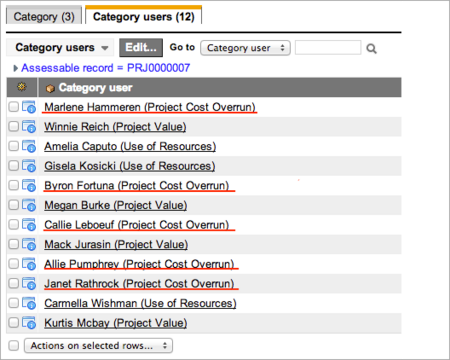
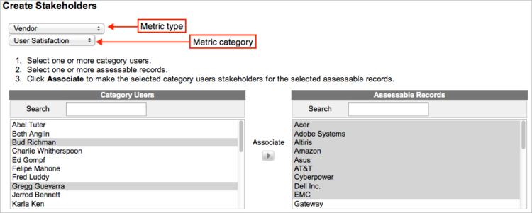
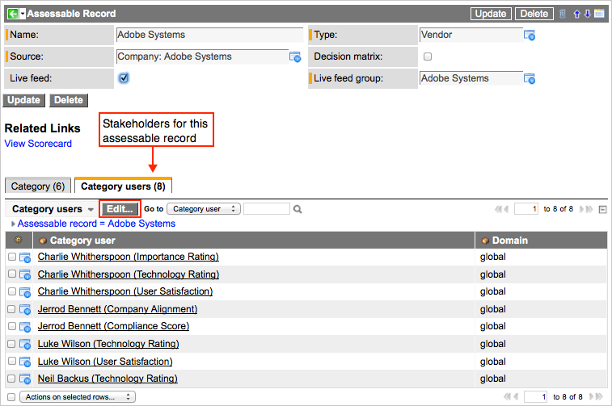
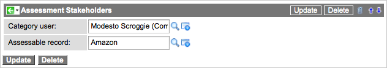

Category Users and Stakeholders
Contents
- 1 Overview
- 2 Category Users
- 3 Stakeholders
1 Overview
Users who take assessments are individuals in your organization who have specific knowledge of the assessment categories and the records being assessed. A person who is qualified to answer assessment questions from metrics in a specific category becomes a category user when associated to that category. A category user then becomes a stakeholder when associated to a specific assessable record. ServiceNow determines which assessable records and questions a user receives by looking at the metric categories and assessable records for which those users are stakeholders. Assessment administrators can create and manage category users and stakeholders.
| |
Note: Category users and stakeholders are used only for scheduled assessments. |
2 Category Users
Category users are ServiceNow users who can potentially answer assessment questions about a particular metric category for scheduled assessments. Category users should have special knowledge of the categories and the metrics those categories contain. A category user becomes a stakeholder when associated to an assessable record. Create at least one category user for each category you want to use for assessment questionnaires. There is no need for category users if the category contains only scripted metrics.
2.1 Creating Category Users
Create category users by associating users in the system to metric categories. When you create category users, choose users who are knowledgeable and can answer questions from that category. For example, a purchasing agent is a good category user for metrics that evaluate a vendor's discount practices.
- Navigate to Assessments > Metric Definitions > Categories.
- Open a category record.
- The category must be associated to a metric type that has the Schedule type set to Scheduled.
- In the Users related list, click Edit.
- Select the appropriate users for this category.
3 Stakeholders
A stakeholder is a category user with specific product or service knowledge, who is associated to an assessable record. A stakeholder is familiar with the assessable record and all the metrics within a specific category. The same category user can be associated to multiple assessable records, in which case the system creates a stakeholder record for each association.
There are multiple ways to create stakeholders:
- Configure the system to create stakeholders automatically.
- Associate multiple category users to multiple assessable records.
- Associate multiple category users to one assessable record.
- Associate one category user to one assessable record.
| |
Note: Ensure you establish the desired user and assessable record associations to categories before attempting to creating stakeholders. |
3.1 Creating Stakeholders Automatically
You can configure the system to create stakeholders automatically from all category users and assessable records associated with a category using the Create stakeholders check box on the Metric Category form. If you associate a user to the category, the system makes the resulting category user a stakeholder for all the assessable records associated to the category. Similarly, if you associate a new assessable record to the category, the system automatically makes all category users stakeholders for that record if they are not already stakeholders.
| |
Note: Use the Create stakeholders check box with caution. You can end up with more stakeholders than you want and a large amount of unnecessary assessment data. Automatic stakeholder creation is best suited to assessment implementations in which category users are knowledgeable about all or most of the assessable records associated to each category. |
- Navigate to Assessments > Metric Definition > Categories.
- Select a category.
- Associate category users and assessable records to the category.
- Select the Create stakeholders check box.
- Click Update.
- All the category users are associated to all the assessable records as stakeholders.
- In the Assessable Records related list, click Edit.
- Using the slushbucket, associate an assessable record to the category.
- Click Save.
- The system makes all category users stakeholders for the new assessable record.
- 
- Delete stakeholders as needed.
{kind=link}
{kind=link}
3.2 Associating Multiple Category Users to Multiple Assessable Records
The stakeholder list helper in the Create Stakeholders module is the most efficient way to associate multiple category users to multiple assessable records in a single interface. You can select category users from one category at a time. Note that you cannot edit or delete stakeholders using the list helper.
- Navigate to Assessments > Advanced > Create Stakeholders.
- The stakeholder list helper appears.
- 
- Select a metric type from the list of available types.
- Only metric types for scheduled assessments are available. On-demand assessments do not use category users or stakeholders.
- Select a category from the list of available categories. Only categories within the selected metric type are available.
- ServiceNow populates the Category User and Assessable Records lists with category users and assessable records associated to the selected category.
- Select one or more category users from the Category Users list.
- Select one or more assessable records from the Assessable Records list.
- Click the Associate arrow between the lists to complete the association.
- A message above the list helper advises you that the selected category users are now stakeholders for the selected assessable records.
{kind=link}
3.3 Associating Multiple Category Users to One Assessable Record
You can create many stakeholders for a single assessable record from the Assessable Record form. You can also edit or delete stakeholders from the form.
- Navigate to Assessments > Assessable Records.
- Open a record from the list.
- In the Category users related list, click Edit.
- These category users are the stakeholders for this assessable record
- 
-
- Use the slushbucket to edit the category users associated to this assessable record. Add category users to create stakeholders. Remove category users to delete stakeholders.
- The system only shows category users for categories associated to the assessable record. For example, if an assessable record is only associated to the Compliance Score and Support Rating categories, you do not see User Satisfaction category users.
{kind=link}
3.4 Associating One Category User to One Assessable Record
You can create a single stakeholder using the list in the Assessment Stakeholders module. Associate any category user to any assessable record.
- Navigate to Assessments > Advanced > Assessment Stakeholders.
- Click New.
- On the Assessment Stakeholders form, fill in these fields:
- Category user: Select a category user.
- Assessable record: Select an assessable record.
- Click Submit.
- The selected category user becomes a stakeholder for the selected assessable record. To verify the association, navigate to the assessable record and note that the selected category user is on the Category users related list.
-
- 
-
{kind=link}
| |
Note: Do not create stakeholders from category users and assessable records of different metric types. |
3.5 Deleting Stakeholders
You can delete stakeholders from different modules, depending on the number of stakeholders being deleted.
3.5.1 List of Stakeholders
You can delete stakeholders for multiple assessable records using this method.
- Navigate to Assessments > Advanced > Assessment Stakeholders.
- Sort the list by Assessable Record or Category User depending on the perspective you want.
- Select the check box for each stakeholder you want to delete.
- Select Delete in the Actions choice list.
- Click OK to confirm the action.
- The system deletes the stakeholders.
3.5.2 Assessable Record
You can delete stakeholders for one assessable record using this method.
- Navigate to Assessments > Assessable Records.
- Open an assessable record.
- In the Category Users related list, select the check box for each stakeholder you want to delete.
- Select Delete in the Actions choice list.
- Click OK to confirm the action.
- The system deletes the stakeholders.